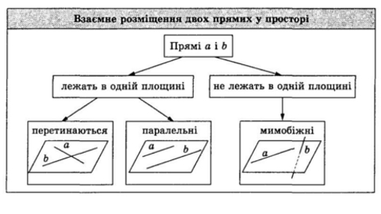
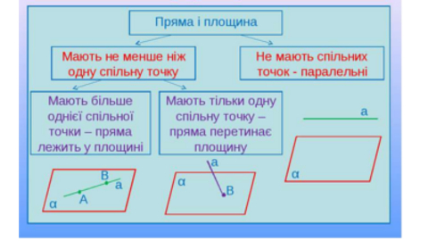
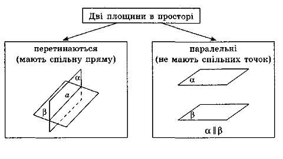
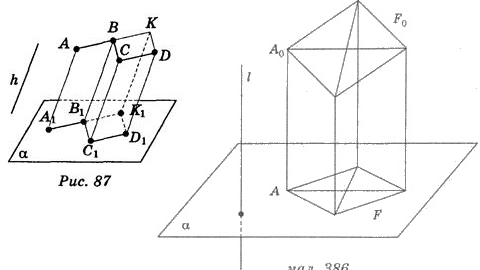
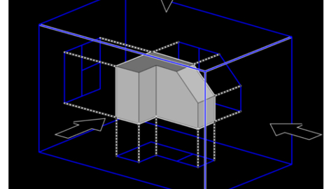
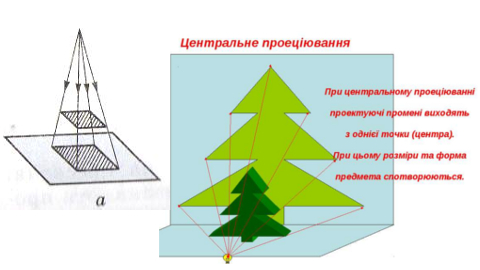

Toggle navigation
Головна
Учбовий матеріал
Учбовий матеріал
Вступ до стереометрії
ТЕСТ
Просторові фігури. Початкові відомості про многогранники.
Переріз многогранника площиною
Паралельність прямих і площин у просторі

14
Feb
Розміщення двох прямих у просторі: прямі, що перетинаються, паралельні прямі, мимобіжні прямі

14
Feb
Паралельність прямої та площини

14
Feb
Паралельність двох площин

14
Feb
Паралельне проектування. Зображення плоских і просторових фігур у стереометрії

14
Feb
Властивості зображень деяких многокутників у паралельній проекції(Додатковий матеріал)

14
Feb
Центральне проектування. Зображення просторових фігур під час центрального проектування(Додатковий матеріал)